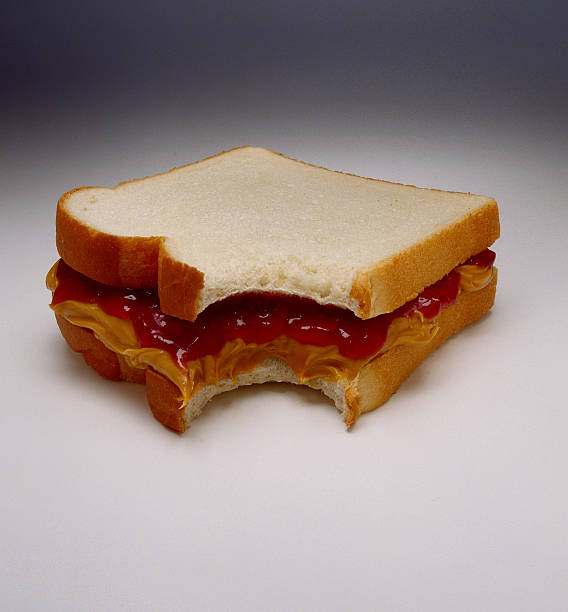

Peanut Butter & Jelly Sandwich

Description
Who hasn't heard of this classic dish? The peanut butter and jelly sandwich is the quintessential picnic food, and is also the food that you are going to learn how to make right now.
Ingredients
- 2 Slices of White Bread
- Peanut Butter
- Your Favorite Jelly
Steps
- Place your two slices of white bread down.
- Using a spoon or butter knife, spread the desired amount of peanut butter evenly across the surface of one of the slices of bread.
- Using a different spoon or butter knife, spread the desired amount of jelly evenly across the surface of the other slice of bread.
- Finally, put the two slices together with the peanut butter and jelly in the middle.